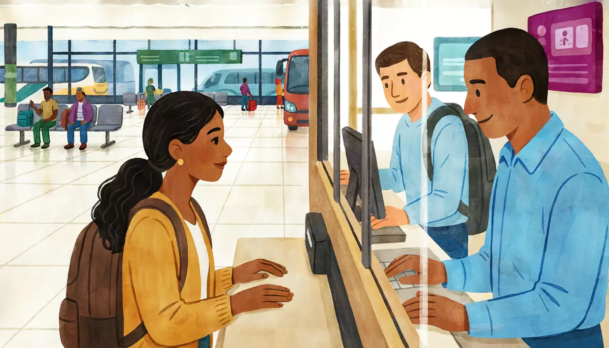

I can buy a bus ticket and ask about schedules and prices.Goal of this lesson · CEFR Obtaining goods and services A2; Reading for orientation A2
Paso 1 de 8
EscuchaListen
Listen to the conversation, then answer the questions.

Friday 30 October, 5:50 p.m., at TAPO, Mexico City's eastern bus terminal. Mariana is going home to Puebla for the Día de Muertos weekend, to help her grandmother Elena set up the family ofrenda (altar for the dead). She buys her ticket at the counter. usted (Mariana and the ticket clerk) · tú (Mariana and Alex)
First listen without the text. Press Escuchar todo and answer the first question. Then show the Spanish text and listen again.
ChooseWhat ticket does Mariana buy?
Your answer:
T
El taquilleroBuenas tardes. ¿A dónde va?Good afternoon. Where are you going?
M
MarianaBuenas tardes. Un boleto a Puebla, por favor. ¿A qué hora sale el próximo autobús?Good afternoon. A ticket to Puebla, please. What time does the next bus leave?
T
El taquilleroHay uno a las dieciocho treinta, pero ya no hay lugares. El siguiente sale a las diecinueve horas.There's one at 18:30, but there are no seats left. The next one leaves at 19:00.
M
MarianaBueno, el de las siete. ¿Y a qué hora llega a Puebla?OK, the seven o'clock one. And what time does it get to Puebla?
T
El taquilleroLlega a la CAPU como a las nueve y cuarto. Pero los viernes hay mucho tráfico en la salida a Puebla.It gets to the CAPU around a quarter past nine. But on Fridays there's a lot of traffic on the way out to Puebla.
M
MarianaNi modo. ¿Cuánto cuesta?Oh well. How much is it?
T
El taquillero¿Sencillo o de ida y vuelta?One way or round trip?
M
MarianaDe ida y vuelta. Regreso el domingo en la tarde.Round trip. I'm coming back on Sunday afternoon.
T
El taquilleroEl sencillo cuesta trescientos veinte pesos, y el de ida y vuelta, seiscientos cuarenta. ¿A qué hora quiere regresar el domingo?One way is three hundred and twenty pesos, and round trip is six hundred and forty. What time do you want to come back on Sunday?
M
Mariana¿Hay uno como a las seis de la tarde?Is there one around six in the evening?
T
El taquilleroSí, a las dieciocho horas, de la CAPU. ¿Ventanilla o pasillo?Yes, at 18:00, from the CAPU. Window or aisle?
M
MarianaVentanilla, por favor. ¿Se puede pagar con tarjeta?Window, please. Can I pay by card?
T
El taquilleroSí, claro. ¿A nombre de quién?Yes, of course. Whose name is it under?
M
MarianaMariana Ortiz Luna.Mariana Ortiz Luna.
T
El taquilleroListo. Su autobús sale del andén siete. Hay que estar en el andén quince minutos antes. Mientras tanto, puede pasar a la sala de espera.There you go. Your bus leaves from platform seven. You have to be at the platform fifteen minutes before. Meanwhile, you can go and wait in the waiting room.
M
Mariana¡Muchas gracias!Thank you very much!
1
ChooseListen again and answer.
Why doesn't Mariana take the 18:30 bus?
How much does Mariana pay?
What does the clerk ask her to do?
Escena 2: In the waiting room
6:40 p.m. Mariana is waiting for her bus when Alex phones her.
A
Alex¿Bueno? Hola, Mariana. ¿Sigues en la terminal?Hello? Hi, Mariana. Are you still at the terminal?
M
MarianaSí, sigo aquí, en la sala de espera. Mi autobús sale a las siete.Yes, I'm still here, in the waiting room. My bus leaves at seven.
A
Alex¿Y a qué hora llegas a Puebla?And what time do you get to Puebla?
M
MarianaComo a las nueve y cuarto. Mi hermana Lucía va a ir por mí a la CAPU.Around a quarter past nine. My sister Lucía is going to pick me up at the CAPU.
A
Alex¡Qué bien! ¿Y cuándo regresas?Great! And when are you coming back?
M
MarianaEl domingo. Salgo de Puebla a las seis de la tarde y llego aquí como a las ocho y media.On Sunday. I leave Puebla at six in the evening and I get here around half past eight.
N
NarradoraAutobuses Talavera anuncia la salida de su corrida de las diecinueve horas con destino a Puebla. Favor de pasar al andén número siete.Autobuses Talavera announces the departure of its 19:00 service to Puebla. Please go to platform number seven.
M
Mariana¡Ay, es mi autobús! Te dejo, Alex. ¡Nos vemos el lunes!Oh, that's my bus! I have to go, Alex. See you on Monday!
1
ChooseAnswer the questions: Escena 2: In the waiting room
Who is picking Mariana up in Puebla?
When does Mariana get back to Mexico City on Sunday?
What does the announcement say?
Paso 2 de 8
FíjateNotice
Read how it works. Play the examples and repeat them aloud.
Salir, llegar, seguir: leaving, arriving, still being there
Three verbs for travel. Salir (to leave, to go out) is irregular only in yo: salgo. Llegar (to arrive) is regular in the present: llego, llegas, llega. Seguir (to keep going; to still be somewhere) changes e → i and drops the u in yo: sigo, sigues, sigue. Watch the little words: salir de a place, llegar a a place (llega a la CAPU), and a las… for the time.
salir
llegar
seguir
yo
salgo
llego
sigo
tú
sales
llegas
sigues
él, ella, usted
sale
llega
sigue
nosotros, nosotras
salimos
llegamos
seguimos
ellos, ellas, ustedes
salen
llegan
siguen
From the conversation:
Hay uno a las dieciocho treinta, pero ya no hay lugares. El siguiente sale a las diecinueve horas.There's one at 18:30, but there are no seats left. The next one leaves at 19:00.
Llega a la CAPU como a las nueve y cuarto. Pero los viernes hay mucho tráfico en la salida a Puebla.It gets to the CAPU around a quarter past nine. But on Fridays there's a lot of traffic on the way out to Puebla.
Sí, sigo aquí, en la sala de espera. Mi autobús sale a las siete.Yes, I'm still here, in the waiting room. My bus leaves at seven.
El domingo. Salgo de Puebla a las seis de la tarde y llego aquí como a las ocho y media.On Sunday. I leave Puebla at six in the evening and I get here around half past eight.
Seguir + a place = to still be there: ¿Sigues en la terminal? (Are you still at the terminal?). In directions (6.2) it means to keep going: siga derecho.
Schedules: the 24-hour clock
Tickets, schedules and announcements use the 24-hour clock: 19:00 is read las diecinueve horas (or just las diecinueve), and 18:30 is las dieciocho treinta. In conversation most people switch to the 12-hour clock: a las siete (de la noche), a las seis y media. To convert, take away 12: 22:10 → las diez y diez de la noche.
schedule
announcement
conversation
07:45
las siete cuarenta y cinco
cuarto para las ocho (de la mañana)
14:00
las catorce horas
las dos de la tarde
18:30
las dieciocho treinta
las seis y media de la tarde
22:10
las veintidós diez
las diez y diez de la noche
From the conversation:
Sí, a las dieciocho horas, de la CAPU. ¿Ventanilla o pasillo?Yes, at 18:00, from the CAPU. Window or aisle?
Bueno, el de las siete. ¿Y a qué hora llega a Puebla?OK, the seven o'clock one. And what time does it get to Puebla?
El de las siete = the seven o'clock one (bus). In terminals you'll also hear la corrida de las siete: a corrida is one scheduled bus run.
Buying a ticket
Ask for un boleto a + place (a Puebla), and add para + day if it's not for today (para el viernes). The clerk will ask: ¿Sencillo o de ida y vuelta? (one way or round trip? You'll also hear viaje redondo), ¿Ventanilla o pasillo? (window or aisle?) and ¿A nombre de quién? (whose name?): bus tickets in Mexico carry the passenger's name.
From the conversation:
Buenas tardes. Un boleto a Puebla, por favor. ¿A qué hora sale el próximo autobús?Good afternoon. A ticket to Puebla, please. What time does the next bus leave?
¿Sencillo o de ida y vuelta?One way or round trip?
Listo. Su autobús sale del andén siete. Hay que estar en el andén quince minutos antes. Mientras tanto, puede pasar a la sala de espera.There you go. Your bus leaves from platform seven. You have to be at the platform fifteen minutes before. Meanwhile, you can go and wait in the waiting room.
¿Se puede + infinitivo?: is it possible to…?
¿Se puede…? + infinitive asks if something is possible or allowed, in general: ¿Se puede pagar con tarjeta? (Can you pay by card?). It's an Andamio structure. Compare ¿Puedo…? (Can I…?), which you know from 4.3. The answers: Sí, se puede / No, no se puede.
From the conversation:
Ventanilla, por favor. ¿Se puede pagar con tarjeta?Window, please. Can I pay by card?
¿Se puede comprar el boleto en línea?Can you buy the ticket online?
No, aquí no se puede fumar.No, you can't smoke here.
Paso 3 de 8
PracticaPractice
Do the exercises in order. They get freer as you go.
1
Listen and chooseListen to the terminal. Answer the questions.
What time does the bus leave?
Show what they say
Narradora: Autobuses Talavera anuncia la salida de su corrida de las quince cuarenta y cinco con destino a Puebla. Favor de pasar al andén cuatro.
Which platform is the bus to Oaxaca?
Show what they say
Narradora: Pasajeros con destino a Oaxaca: su autobús de las veintidós horas sale del andén doce.
What's the problem?
Show what they say
Narradora: Atención: la corrida de las diecisiete treinta a Veracruz sale con treinta minutos de retraso.
How much is a round-trip ticket to Tlaxcala?
Show what they say
El taquillero: El sencillo a Tlaxcala cuesta doscientos cincuenta y cinco pesos, y el de ida y vuelta, quinientos diez.
2
Type the missing wordsComplete with salir, llegar, seguir or poder.
Yo de la oficina a las seis. (salir)
I leave the office at six.
¿A qué hora el autobús a Puebla? (salir)
What time does the bus to Puebla leave?
Nosotros a la CAPU a las nueve. (llegar)
We get to the CAPU at nine.
Alex, ¿ en la terminal? (seguir)
Alex, are you still at the terminal?
Sí, aquí, en la sala de espera. (seguir)
Yes, I'm still here, in the waiting room.
Los autobuses a Oaxaca del andén doce. (salir)
The buses to Oaxaca leave from platform twelve.
¿Se pagar con tarjeta? (poder)
Can you pay by card?
3
ChooseSchedule or conversation? Choose the same time.
Sale a las 20:15.
Llega a las 13:40.
Sale a las 06:30.
Sale a las 23:00.
4
MatchMatch the words.
EspañolEnglish
5
Put the words in orderPut the words in order.
What time does the next bus leave?
A round-trip ticket, please.
Can you pay by card?
Which platform does it leave from?
6
Say it in SpanishNow you. Say it in Spanish (or type it).
Ask for a ticket to Puebla for Friday.
Un boleto a Puebla para el viernes, por favor.
Ask what time the next bus leaves.
¿A qué hora sale el próximo autobús?
Ask what time it gets to Puebla.
¿A qué hora llega a Puebla?
Say you want a round-trip ticket and a window seat.
De ida y vuelta, y ventanilla, por favor.
Ask if you can pay by card (is it possible?).
¿Se puede pagar con tarjeta?
Say you leave work at six.
Salgo del trabajo a las seis.
Ask which platform it leaves from.
¿De qué andén sale?
7
Your own sentencesAt the ticket office.
Here are the Autobuses Talavera times. From TAPO to Puebla: 06:00, 08:00, 13:00, 16:00, 19:00 (first class, $320 one way) and 10:30, 18:30 (lujo, $410). From Puebla back to TAPO: 07:00, 15:00, 17:00, 18:00 (first class) and 11:00, 20:30 (lujo). The trip takes about 2 hours 15 minutes. You want to go to Puebla on Saturday afternoon and come back on Sunday afternoon. Write what you say at the ticket office: ask for the ticket, choose a departure and a return time, ask the price, choose a seat, and ask one question with ¿Se puede…?
Show a model answer
Buenos días. Un boleto de ida y vuelta a Puebla para el sábado, por favor. Quiero salir a las cuatro de la tarde y regresar el domingo a las cinco de la tarde. ¿Cuánto cuesta? Ventanilla, por favor. ¿Se puede pagar con tarjeta?
Check your answer:
Paso 4 de 8
PalabrasWords
Listen to each word and repeat it. Then do the quick check.
En la terminalat the bus terminal
la terminal (de autobuses)bus terminal
la taquillaticket office
el taquillero, la taquilleraticket clerk
el andénplatform, bay
la sala de esperawaiting room
la salidadeparture; exit
la llegadaarrival
el equipajeluggage
la maletasuitcase
El boletothe ticket
el boletoticket
sencilloone way
de ida y vueltaround trip
ventanillawindow seat
pasilloaisle seat
primera clasefirst class
el asientoseat
Verbos y frasesverbs and phrases
salir (salgo) deto leave (from)
llegar ato arrive at, to get to
seguir (sigo)to keep going; to still be (somewhere)
This is the schedule on the Autobuses Talavera counter at TAPO. Read it and answer the questions.
Bus schedule
Autobuses Talavera · Ciudad de México (TAPO) – Puebla (CAPU)
Salidas de la TAPO a Puebla (todos los días)
06:00 · primera clase
$320
08:00 · primera clase
$320
10:30 · lujoluxury: asientos más grandes y wifi
$410
13:00 · primera clase
$320
16:00 · primera clase
$320
18:30 · lujo
$410
19:00 · primera clase
$320
21:30 · primera clase
$320
Salidas de Puebla (CAPU) a la TAPO (todos los días)
07:00 · primera clase
$320
11:00 · lujo
$410
15:00 · primera clase
$320
17:00 · primera clase
$320
18:00 · primera clase
$320
20:30 · lujo
$410
Duraciónlength del viaje: 2 horas 15 minutos, más o menos. Precios por persona, viaje sencillo. Compre su boleto en la taquilla, en línea o en nuestra app. Equipajeluggage: una maleta de hasta 25 kilos sin costo. Hay que estar en el andén 15 minutos antes de la salida. Avisonotice: del 20 al 24 de diciembre hay más salidas a Puebla, cada hora de 06:00 a 22:00. Se puede pagar con tarjeta o en efectivo. Niños de 3 a 12 años: 50 % de descuentodiscount.
Words with a dotted underline have a translation: tap or hover.
1
ChooseAnswer the questions about the text.
You want to arrive in Puebla before 1 p.m. on a first-class bus. Which is the last one you can take from TAPO?
How much is a round-trip ticket in luxury class?
What can you take at no extra cost?
What is the last bus from Puebla in the evening?
Paso 6 de 8
CulturaCulture
Read about the culture behind the language.
Traveling by bus in Mexico
Mexico has few long-distance passenger trains, so most people travel between cities by bus (autobús; many people also say camión). In primera clase you get a reserved reclining seat, air conditioning and a toilet; ejecutivo or lujo classes add wider seats and fewer rows. You buy your ticket at the taquilla or online, and it shows your name, your seat and the departure time; the screens in the terminal show the andén.
Mexico City has four main bus terminals, roughly named after the compass points: the Terminal Central del Norte (buses to the north and the Bajío, such as Querétaro and Guanajuato), the Terminal Central del Sur at Tasqueña (Cuernavaca, Taxco, Acapulco), the TAPO (Terminal de Autobuses de Pasajeros de Oriente) in the east (Puebla, Veracruz, Oaxaca, the Yucatán Peninsula) and the Terminal Poniente at Observatorio (Toluca, Michoacán). Each one is next to a metro station: Autobuses del Norte, Tasqueña, San Lázaro and Observatorio.
Puebla is about 130 km from Mexico City: roughly two hours by bus, more with traffic. Most buses to Puebla leave from TAPO and arrive at the CAPU (Central de Autobuses de Puebla). A first-class ticket costs a few hundred pesos one way; prices change, so check before you go. Tips: arrive early, keep the tag for your suitcase, and take a sweater: the air conditioning is often strong!
Elsewhere: In Spain a ticket is a billete and people cogen el autobús at the estación de autobuses (Spain). In Argentina a long-distance bus is a micro (a city bus is a colectivo), and in much of South America you buy a pasaje.
Sources
Sistema de Transporte Colectivo Metro de la Ciudad de México: stations Autobuses del Norte, Tasqueña, San Lázaro (TAPO) and Observatorio (Terminal Poniente).
Reglamento de Autotransporte Federal y Servicios Auxiliares (SCT, now SICT): classes of intercity passenger service (económico, primera, ejecutivo, lujo).
Central de Autobuses de Puebla (CAPU): official information for travelers.
1
ChooseCheck: what did you learn?
Mariana goes to Puebla. Which terminal does she use in Mexico City?
Paso 7 de 8
Tu turnoYour turn
Now use it: do the role play, then write.
Role play: At the ticket office
You're at TAPO. You want to go to Puebla on Saturday and come back on Sunday afternoon. Use the times from the Lee step you've just read. Use usted with the clerk.
You
Ask for a ticket to Puebla for Saturday and ask about the first buses.
Choose a bus and ask what time it arrives.
Say one way or round trip, and when you come back.
Ask the price, choose a seat, and ask a question with ¿Se puede…?
Give your name and ask which platform it leaves from.
El taquillero
Asks where you're going.
Gives departure times.
Asks ¿Sencillo o de ida y vuelta? and ¿Ventanilla o pasillo?
Asks your name.
Tells you the platform and when to be there.
1. Listen to a model
One way the conversation could go. Listen, then try it yourself without looking.
T
El taquilleroBuenos días. ¿A dónde va?Good morning. Where are you going?
A
AlexBuenos días. Un boleto a Puebla para el sábado, por favor. ¿A qué hora sale el primer autobús?Good morning. A ticket to Puebla for Saturday, please. What time does the first bus leave?
T
El taquilleroA las seis de la mañana, y luego a las ocho.At six in the morning, and then at eight.
A
AlexA las ocho, por favor. ¿A qué hora llega?At eight, please. What time does it arrive?
T
El taquilleroComo a las diez y cuarto. ¿Sencillo o de ida y vuelta?Around a quarter past ten. One way or round trip?
A
AlexDe ida y vuelta. Salgo de Puebla el domingo a las cinco. ¿Cuánto es?Round trip. I'm leaving Puebla on Sunday at five. How much is it?
T
El taquilleroSon seiscientos cuarenta pesos. ¿Ventanilla o pasillo?That's six hundred and forty pesos. Window or aisle?
A
AlexPasillo, por favor. ¿Se puede pagar con tarjeta?Aisle, please. Can I pay by card?
T
El taquilleroSí. ¿A nombre de quién?Yes. Whose name is it under?
A
AlexAlex Morgan. ¿De qué andén sale?Alex Morgan. Which platform does it leave from?
T
El taquilleroDel andén cuatro. Hay que estar ahí quince minutos antes.From platform four. You have to be there fifteen minutes before.
2. Record yourself
Say your part aloud (pause the model after each of El taquillero's lines), or answer the questions in the role card. Then play it back and compare.
3. Practice with an AI partner (optional)
Copy this prompt into ChatGPT or Claude, switch on voice mode, and have the conversation. It plays El taquillero.
Stuck? Say «ayuda» and it gives you a hint in English, then carries on.
Finished? Say «terminamos» and it gives you feedback in English: what you did well, your mistakes, and useful phrases for next time.
Let's practice Spanish (Mexican Spanish, level A2). You are a ticket clerk, a man of about 40, at the Autobuses Talavera counter in TAPO, Mexico City's eastern bus terminal. Use "usted".
Buses from TAPO to Puebla (CAPU), every day: 06:00, 08:00, 13:00, 16:00, 19:00, 21:30 first class, 320 pesos one way; 10:30 and 18:30 luxury (lujo), 410 pesos. From Puebla to TAPO: 07:00, 15:00, 17:00, 18:00 first class; 11:00 and 20:30 luxury. The trip takes about 2 h 15 min. A round-trip ticket costs double. Card or cash. One suitcase up to 25 kg is free. Passengers must be at the platform 15 minutes before departure.
Rules:
- Speak only Spanish, short turns (1-2 sentences), simple language for an A2 learner.
- Ask where I'm going and when, give me departure times (say them both ways: "a las dieciocho treinta, las seis y media"), ask "¿Sencillo o de ida y vuelta?" and "¿Ventanilla o pasillo?", ask my name, and tell me the platform. Use simple A2 Spanish.
- You play only this one person. Never speak as anyone else, and don't describe what other people say or do.
- If I make a mistake, don't stop me: repeat what I said correctly in your answer (for example: if I say "¿A qué hora sala el autobús?", you say "¿A qué hora sale? Sale a las ocho.").
- Say the bus I choose first is full ("ya no hay lugares") and offer me the next one.
- When I say "ayuda", step out of the role play for a moment: in English, give me a short hint about what I could say next, with one or two short Spanish options, then continue the role play where we were.
- When I say "terminamos", stop the role play and give me feedback in English: 3 things I did well, up to 3 mistakes with corrections, and 3 useful phrases for next time.
Start now: say "Buenos días. ¿A dónde viaja?"
Writing: My trip
You're going to visit a friend in another city by bus. Write them a message: when you leave, from which terminal, what time you arrive, how much the ticket costs, when you come back, and one question (¿Se puede…? or ¿Puedes…?).
60–100 words.
Show a model answer
¡Hola, Mariana! Ya tengo mi boleto para Puebla. Salgo de la TAPO el sábado veintiocho de noviembre a las cuatro de la tarde, en primera clase, y llego a la CAPU como a las seis y cuarto. ¿Puedes ir por mí? Regreso el domingo a las cinco de la tarde. El boleto de ida y vuelta cuesta seiscientos cuarenta pesos. ¿Se puede visitar la pirámide de Cholula el domingo en la mañana? ¡Nos vemos el sábado!
Check your text:
Paso 8 de 8
¿Lo logré?Did I do it?
Check yourself against the goal of the lesson.
Read each statement and be honest: anything marked casi or todavía no goes into Repaso so it comes back soon.
I can buy a bus ticket: one way or round trip, and choose a seat.
I can ask what time a bus leaves and arrives, and how much it costs.
I can read a bus schedule with the 24-hour clock.
I can talk about my trips with salgo, llego, sigo.
I can ask if something is possible with ¿Se puede…?